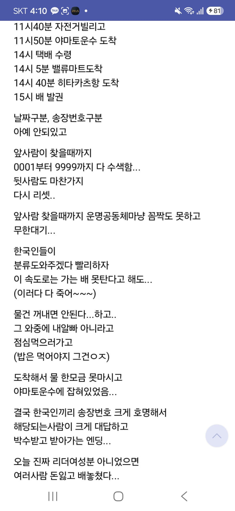
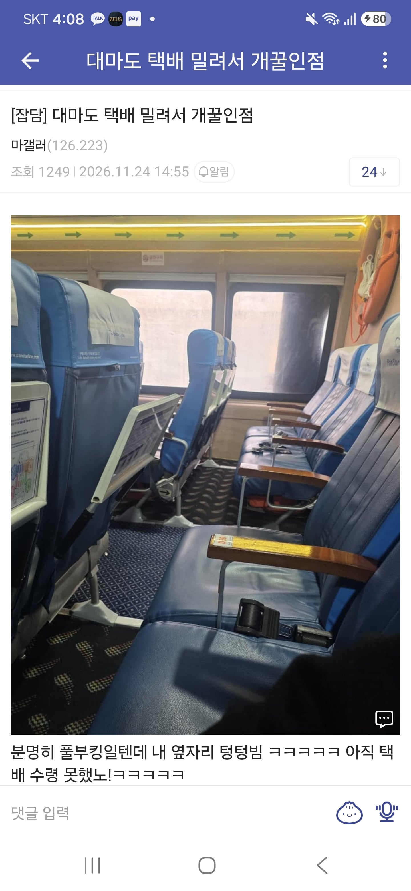

일처리 레전드네
일처리방식이 아날로그 일본답네 그덕에 배못탄 사람도 생기는듯
강제로 대마도에 갇힘


일처리 레전드네
일처리방식이 아날로그 일본답네 그덕에 배못탄 사람도 생기는듯
강제로 대마도에 갇힘
오 연말에 대마도나 갈까했는데. 예매 빡세려나?
북부로 들어가서 남부로 나오는거 블로그 찾아보고 그랬는데
일본인이 그렇지뭐
개폐급 일본인... 까놓고 말해서 일머리가 저렇게 없으니까 저기서 일하는거겠지. 뭐 어쩔 수 있나. 일본인 사이에서도 개폐급이라고 욕 많이 먹었을거다
바꿔서 보면
울릉도 물류센터에 일본인 수만명이 몰려온 격이라
울릉도에 일본인와도 저따위로 안햇을껄 김천축제보면알지. 거긴 도시인구보다 더 많은 사람이 와서 나날이 처리방식이 발전하잖아
김천축제도 24년 처음 했을 땐 지옥도였는데..? 당시 교통난이나 혼란 기억 안남?
아 그러네 작년부터 재작년 당한거 만회하면서 발전해갔지 어쩔수없군 처음은
그래.. 너말대로 나날이 발전하잖아 ㅋㅋㅋ 쟤네도 나날이 발전하겠지 ㅋㅋㅋㅋ 저렇게 된지 며칠이나 됐다고. 대마도 택배운송 하던 사람들 진짜 존나 당황했을듯
저긴 그런 시스템이 필요한적 없었을지도 모르지
우리나라로 치면 마라도쯤 되는 깡촌아닌가
좀 멀리있고 다리 안뚫린 완도나 남해 같은 느낌.
갑작스럽게 안하던 업무를 대량으로 하니까 혼란스럽겠지
외화유출지리네
근데 한국서 사는게 외화유출이 더 큼
ㅇㄱㄹㅇ 어차피 일라이릴리가 가져가는거잖
어허. 외화 절약임 오히려
한국이 먼저 내 지갑을 유출시켰잖아
건보처리해달라고 찡찡안대고 일본까지 가는 애국자들이시다
???: 세일해서 구매하면 그만큼 타격을 주는거야
대마도 호텔 빈방 없었겠네 ㅋㅋㅋ
매뉴얼대로라고 하지만 쟤들도 지금 인구 2만짜리 섬에 인구보다 많은 사람이 몰려온건 처음일걸? ㅋㅋㅋ 존나 얼타게 되는게 당연지사임...
진짜 개 병신들이구나 저새끼들은 ㅋㅋㅋ
이번 면세 바뀐거때문에 일본행정맛 톡톡히 봄
공항가서 면세 안내하는 직원들한테 뭐 물어보면 모른다 알려줄수없다 이러고만 있음
뭐 하나 제대로 안내하는 사람이 없음
그까지 사러갓으면 감수해야지 ㅋㅋㅋ
저거 근데 효율적인거보다 자기가 책임 지지않아야하는 부분이 크기때문에
좆같아도 책 안 잡힐라고 저렇게 일하는거임 애초에 자기방어가 우선이라 메뉴얼 우선임
껄껄껄 대마도에 한명이라도 더 잡아놓기 위한 술수
낚시객들 오열 각이네 ㅋㅋㅋ
또 한번 어글리 코리안 뉴스 함 나오겠내.
이맛에 대면진료 하러 간다